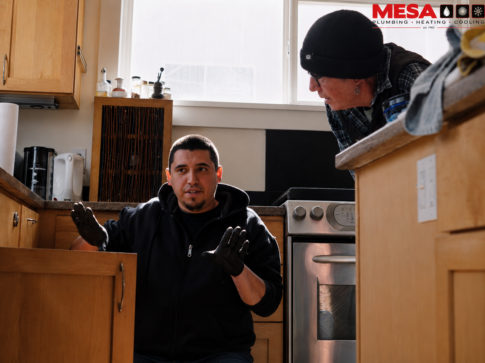
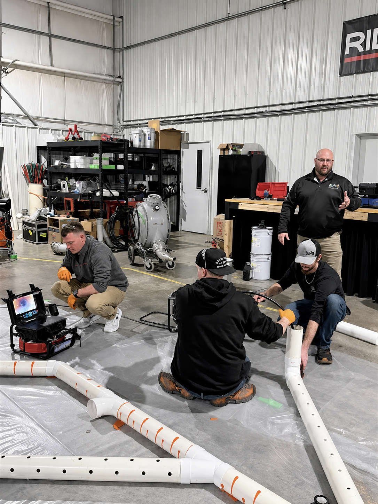

Your local neighborhood experts · Since 1982
Thornton's Trusted Plumbing & Sewer Company
From burst pipes to sewer line backups, Mesa helps Thornton homeowners with honest pricing, dependable plumbing repairs, drain cleaning, and same-day emergency service.

Professional Plumbing & HVAC in Thornton, Colorado
From plumbing repairs and sewer & drain service to boiler repair, heating and cooling help, and water heaters, Mesa Plumbing, Heating & Cooling has you covered. Need help now? Our emergency plumbing team is available 24/7.
Mesa Plumbing, Heating & Cooling is proud to provide trusted, high-quality service to Thornton homes and families.

Proudly Serving Thornton Homeowners
Mesa Plumbing is proud to serve Thornton homes with dependable plumbing, heating, cooling, and emergency service delivered by local experts you can count on.

Common Plumbing Challenges in Thornton, CO
Thornton homes may experience sewer backups, clogged drains, hard water wear, and heating or cooling strain during seasonal swings. Mesa provides reliable plumbing and comfort solutions for local homeowners.
Mesa Plumbing understands these local issues and provides plumbing, sewer & drain, boiler repair, HVAC, and water heater solutions for Thornton homeowners.
All About Thornton, CO
Thornton homeowners rely on durable plumbing, sewer, drain, heating, and cooling systems through hot summers, cold snaps, and everyday household use. From older lines to newer fixtures and water heaters, dependable service helps prevent small issues from becoming major repairs.
Mesa Plumbing, Heating & Cooling proudly serves Thornton homeowners with expert plumbing repairs, sewer & drain solutions, boiler repair, HVAC service, water heater help, and emergency support. Our team brings clear communication and practical solutions for urgent repairs and planned service alike.
We are proud to support the Thornton community with responsive service, transparent pricing, and dependable workmanship. Mesa is here to help keep Thornton homes safe and comfortable in every season.
Google Reviews
See What Thornton Customers Are Saying
based on 900+ reviews
Mesa was fast, professional, and fixed our leak the same day. Highly recommend!
2 days agoThey replaced our water heater quickly and did a fantastic job. Great service and fair pricing!
5 days agoHonest, reliable, and very professional. Mesa is our go-to plumbing and sewer team.
1 week agoExcellent experience from start to finish. They explained everything and left everything spotless.
1 week agoFriendly team, clear communication, and the repair was completed right the first time.
2 weeks agoFAQs
Frequently Asked Plumbing Questions
Got questions? We've got answers. Here are some of the most common questions we get from homeowners.
Do you offer 24/7 emergency plumbing and sewer services?
Yes. We provide 24/7 emergency plumbing and sewer service across Thornton and Adams County. When you call, we'll get to you fast.
How much will it cost?
Mesa uses clear, upfront pricing after diagnosing your system, so you know the price before work begins.
Are you licensed and insured?
Yes. Mesa provides licensed and insured plumbing, sewer, drain, and water heater service.
Do you offer financing options?
Financing options may be available for qualifying repairs and replacements. Ask during your estimate.
What areas do you serve?
Thornton, Broomfield, Westminster, Commerce City, Northglenn, Arvada, and nearby communities.
Locations Near You
Thornton Plumbing & Sewer Locations Near You
Choose a nearby Mesa location to see service details, response notes, and the map.